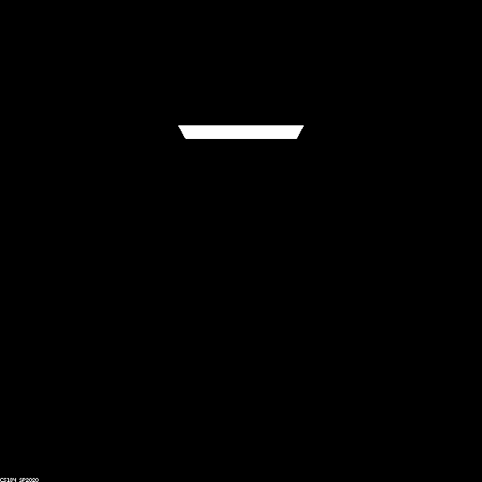
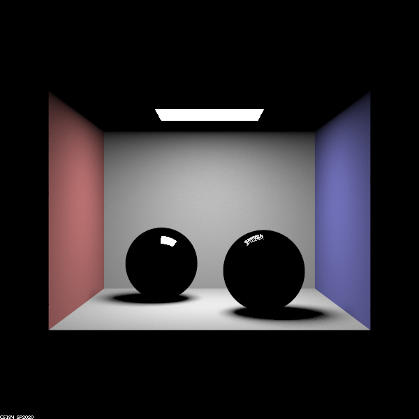
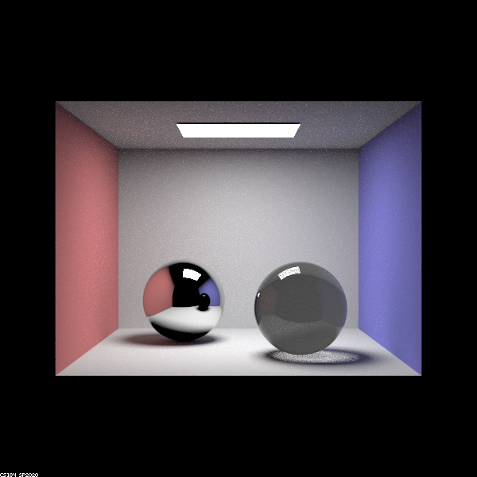
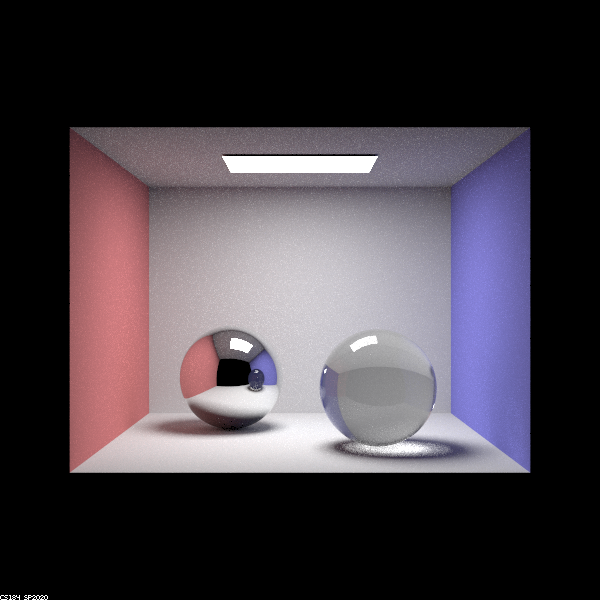
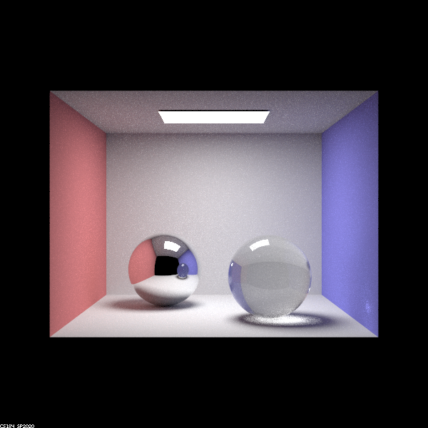
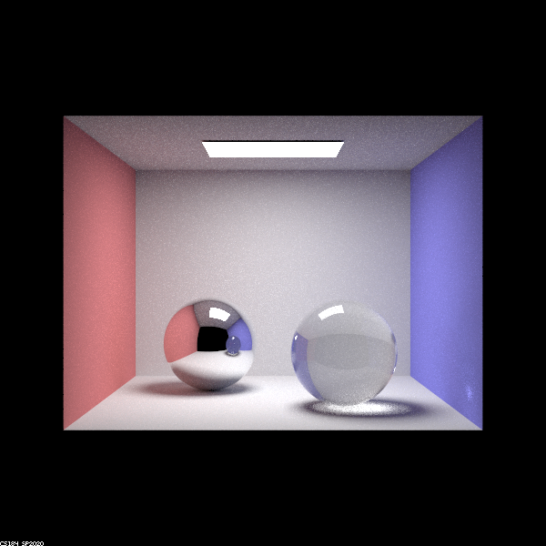
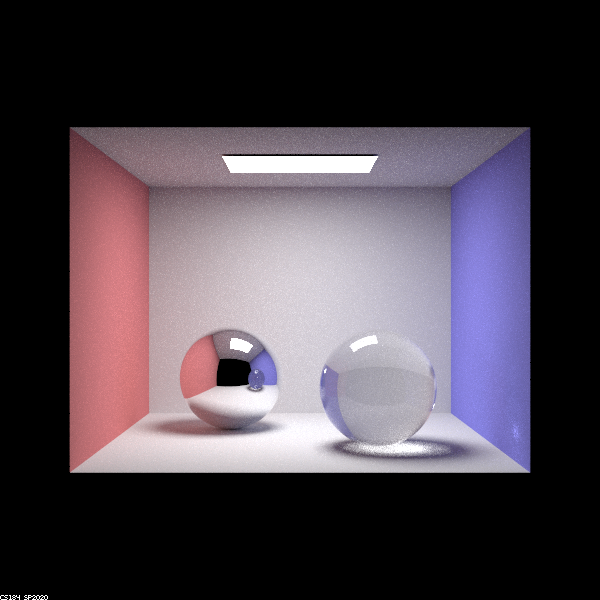

The below picture is after zero bounces. The only thing visible is the light source, this is because only rays that directly trace from the camera to the light source are shown, as these rays involve zero bounces between the light source and camera.
|  |
After one bounce, the walls, floor, and glass spheres are now visible. The spheres appear black and the only reflection is the light sourse. The scene looks this way, because all rays that bounce off one surface between the light source and camera are shown. The sphere does not reflect any of the walls or other surfaces, because it would need at least one more bounce for that to happen.
|  |
After two bounces, relections of the walls, floor and glass ball start to show in the left ball. The glass ball in the reflection is still black because it takes more than two bounces to reflect the surface refraction of it. The glass ball itself is now reflecting some light and refracting others. It is darker due to the fact that only some of the rays are bouncing twice. The ceiling is now visible as well, as rays would have to travel from the light source, bounce off something other than the ceiling, and finally bounce off the ceiling before traveling to the camera.
|  |
After 3 bounces, the ceiling is now visible in the reflection, as well as some of the glass refractions. More refracted rays are shown as well. There is a bright spot under the glass ball, as we now have enough bounces to go from the light source -> glass ball surface -> other side of the glass ball -> floor -> camera.
|  |
After 4 bounces, we have more of the glass surface being shown with refraction, and we now have some light being shown on the right wall from being bounced off the light on the floor of the glass ball.
|  |
After 5 bounces, we continue to show more light overall and some of the high frequency noise is being removed.
|  |
After 100 bounces, we continue to show more light overall, more high frequency noise continues to be removed, and the shadows are softer.
|  |